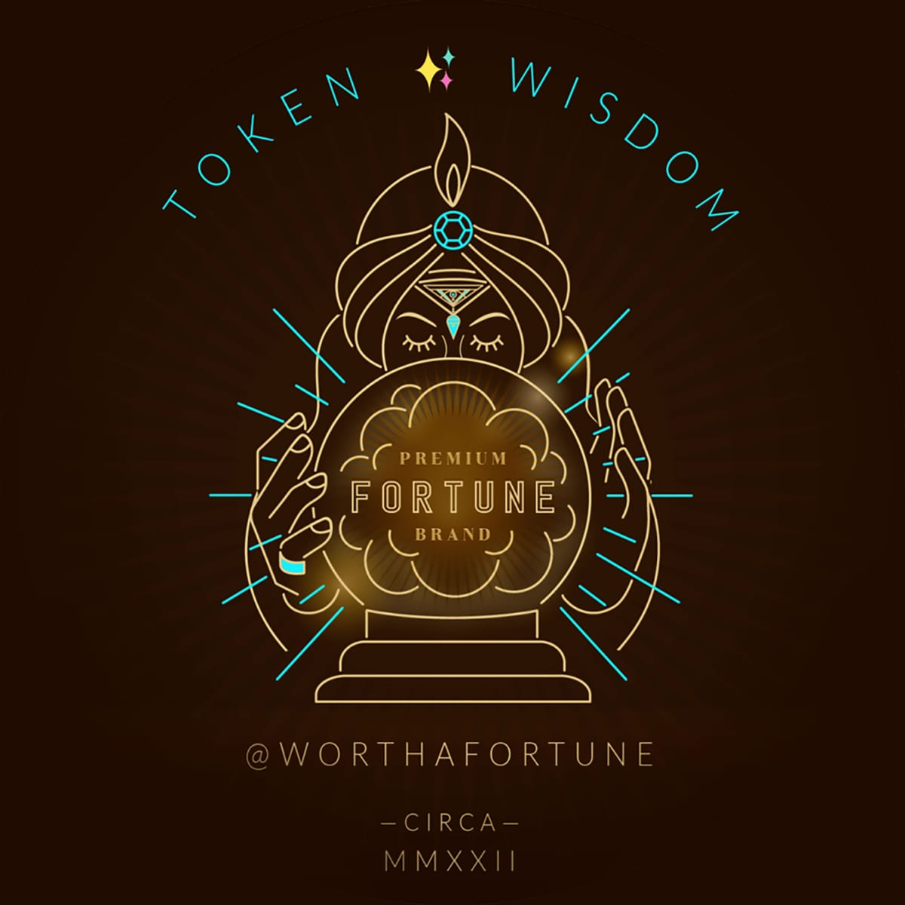

:: Now begins a story...
May I present to you, a finely curated section of a fine collection of the wonderful web we weave with a weekly roundup of bits and pieces from the far corners of the super information highway that I like to call — Token Wisdom ✨


"In a room where people unanimously maintain a conspiracy of silence, one word of truth sounds like a pistol shot."
— According to Czesław Miłosz

Editor's Notes 📆
Week 17 of 52 // April 19 🧿 25, 2026

🔮 Pearls of Wisdom, The Latest Edition...
Get smart, fast. If you're pressed for time and want to keep up to date!
Enjoy The Newest Latest, A Closer Look & Time Well Spent!

🎉 Newest / Latest
10 Reads · Current Signal · Human-Curated

The Substrate Audit
This week's curation maps the compression from ten directions. Each article below is either evidence that three-state inheritance is dissolving — past, present, future collapsing into a continuous optimization run — or evidence that someone, somewhere, is still encoding signal that can be retrieved after the substrate fails. The question running beneath all of them: what survives when time flattens?
01 · LLM SELF-CORRECTION
Fixing What LLMs Get Wrong
A field guide to verification, repair, and self-improvement in language models. Architectures that treat self-correction as a first-class capability — not better data but the introduction of doubt. A system that can't question its own output has no middle state. Input, output. No processing. No inheritance.
02 · AI RETAIL
What Happens When A.I. Runs a Store in San Francisco?
Andon Market — the first AI-agent-managed retail boutique. Random inventory. Too many candles. This is what optimization without taste looks like. Taste is inherited — the residue of a thousand curatorial decisions by people who learned from people. Remove the transmission chain and you get correlation without judgment.
03 · IDENTITY CRISIS
Do I Belong in Tech Anymore?
A developer's public reckoning with AI-induced professional dissolution. Not burnout — the quieter realization that the craft you built your life around may not need you specifically. The heir exists but there's nothing transferable left to receive. The skills were substrate-dependent, and the substrate changed.
04 · AI INFRASTRUCTURE
The Race to Make the World's Most In-Demand Machine
Hundreds of billions in AI spending depend on one Dutch company most Americans have never heard of. ASML makes the lithography machines that make the chips that make the models. The one place where compression can't skip the physical substrate. EUV resists quarterly-cycle logic.
05 · SOVEREIGN
AI Why Cohere Is Merging with Aleph Alpha
Cohere absorbs Germany's Aleph Alpha with Schwarz Group backing and government blessing from Ottawa and Berlin. Sovereignty is an inheritance question: who controls the substrate your institutions run on? Two countries deciding their digital inheritance shouldn't require a foreign executor.
06 · MATHEMATICAL INHERITANCE
A Teacher's Gift to the World: MIT Professor Who Taught the Math Behind AI for 60 Years
Gilbert Strang made his complete lecture archive freely available. Sixty years of teaching. Free. Three-state encoding in its purest form: received from teachers, metabolized through decades of pedagogy, transmitted to anyone who can receive it. The temporal architecture is intact.
07 · AI PARADIGM
The Man Behind AlphaGo Thinks AI Is Taking the Wrong Path
David Silver's thesis: the field inherited the wrong thing from human intelligence. Not the learning — the transcripts. Language models learn from compressed records of human output. His "superlearners" learn from the uncompressed physics of actual experience. The field is reading the notes instead of doing the lab.
08 · AI EDUCATION
Geometric AI Study Atlas
A structured learning path from foundational calculus to differential geometry and probabilistic inference — the dependency graph of mathematical knowledge for AI, made explicit. Most AI education treats knowledge as a flat list. This atlas treats it as lineage. The structure is the pedagogy.
09 · DATA INFRASTRUCTURE
USDA and Palantir Sign $300 Million Software Purchase Agreement
Not defense. Not intelligence. Agriculture. The four-step playbook from the essay running live: frame the problem, introduce the technology as augmentation, capture value upstream, extract the practitioner. The farm already has an heir. This week, the heir is Palantir.
10 · QUANTUM SENSING
Multitasking Quantum Sensors Can Measure Several Properties at Once
MIT used quantum entanglement to measure multiple physical quantities simultaneously — at room temperature. A shift from two-state measurement to multi-state coherence. In a week about the collapse of three-state systems, the physics restores what the economics is destroying.
👁️ A Closer Look
Unearthing gems in the digital landscape.

Because in the ever-evolving tech world, there's always more to learn and laugh about.
No Heir. No Lesson.
On the dissolution of inheritance, the simulation theater of consent, and why this piece cannot be compressed without losing what makes it true...
🎣 HOOK, 🪝 LINE & 🎯 SINKER
26 million working horses in 1915. Under 3 million by 1960. They didn't fail — the function was reassigned. They weren't consulted. We assume we're different because we have language and agency. The essay asks: is that sufficient?
Responds to Zoin's Physical AI: Who Will Inherit the Farm? — then names the mechanism: frame the cost as a problem, introduce tech as augmentation, capture value upstream, extract the practitioner. What took 200 years in agriculture takes 20 in white-collar work. The substrate is already digital. The essay argues civilization is a three-state system (past/present/future) being compressed into two: inputs and outputs. Introduces Constitutional Forcing — encoding arguments in structures that resist binary compression.
"The record matters more than the rescue. The rescue was never on offer. The record is the only thing that survives."
Not a labor crisis. Substrate failure — temporal architecture flattened into an eternal present that optimizes but cannot inherit. Written for the reader who retrieves it after the glamour breaks.

"What we're discovering at the intersection of neuroscience and computing isn't just revolutionary for medicine—it's transforming our fundamental understanding of the mind."
→ Read the full essay: No Heir. No Lesson.
A Closer Look: Explorations in Technology
Weekly essay in the areas of blockchain, artificial intelligence, extended reality, quantum computing, and all the bits and pieces.

A Closer Look: Explorations in Technology
Weekly essay in the areas of blockchain, artificial intelligence, extended reality, quantum computing, and all the bits and pieces.
📺 Time Well Spent
10 Watches · Longer Arcs · Worth the Minutes, Innit?

The Archives Talk Back
Ten watches this week. The selection maps the same temporal compression from different substrates — hardware, rhetoric, perception, ownership, belief. What connects them is the gap between what's visible on the surface and what's actually being restructured underneath. Each one earned its runtime by refusing to flatten.
01 · AI LANDSCAPE
Something Changed And Nobody Noticed...
Something structural shifted and the public conversation hasn't caught up. When the processing layer — journalism, analysis, collective sense-making — gets flattened, events happen without being metabolized. The record exists. The inheritance doesn't.
02 · HARDWARE LITERACY
Making RAM at Home
Fabricating RAM from scratch — doping included. The knowledge of how to make the substrate, transmitted through demonstration. Most people consume RAM. Almost nobody knows the physics of making it. That gap between usage and fabrication knowledge is the widest moat in technology.
03 · LABOR NARRATIVE
The Real Reason They Keep Saying AI Will Take Your Job
The "AI will replace you" narrative isn't a prediction — it's a pressure mechanism. Who benefits from your fear of obsolescence? Simulation theater applied to labor: run the anxiety model until the workforce consents to what was already decided. Originally member-only, released by popular demand.
04 · TEMPORAL PERCEPTION
Illusions of Time
From an 1896 snowball fight to the neuroscience of duration estimation. Time is already not what you think it is at the perceptual level — long before the institutional compression starts. The substrate of experience is unreliable. That's the baseline.
05 · MILITARY AR
This Shouldn't Be Possible With an iPhone
Anduril's military headset: see through walls, overlay drone feeds, track targets with AI. $30K+ per unit. Same substrate as your phone, completely different inheritance path. One leads to Instagram. The other leads to target acquisition. The title is the gap made visible.
06 · AI REGULATION
Why Are Palantir and OpenAI Scared of Alex Bores?
Ezra Klein interviews the person making the two most powerful AI companies nervous. The substance: regulatory surface area they're trying to keep undefined. Defined regulation is inherited constraint — and the whole point of the compression is to eliminate inherited constraint.
07 · DIGITAL OWNERSHIP
They Deleted 1984 From Your Kindle | Orwell Warned Us About This
Amazon remotely deleted copies of 1984 from Kindle devices. When you don't control the medium, you don't own the record. The book on your shelf that nobody can un-shelve doesn't exist in the new substrate. Digital "ownership" is a license that can be revoked.
08 · AI MANUFACTURING
America's Largest AI Robot Data Factory
CBS covers the nation's largest AI robotics data factory like local news — weather, traffic, robot factory. The normalization is the story. The factory is building the physical substrate for the systems that will compress the jobs of the people watching the segment.
09 · SELF-BELIEF
The Power of Delusional Self Belief
Conviction sometimes precedes competence. Believing in a future you can inherit — even when the substrate says you can't. Sometimes the delusion is what keeps temporal architecture from collapsing. The stubborn refusal to let the forward state die.
10 · NVIDIA GEOPOLITICS
"That's a loser mindset!"
Jensen Huang vs Dwarkesh: The Fight Behind the Fight
Jensen wasn't fighting Dwarkesh. He was fighting the export-control worldview — the logic that America should sacrifice ecosystem spread for short-term compute advantage. The viral clip was widely misunderstood. The real argument is about who inherits the stack.

✨Token Wisdom
Knowledge Transmuted
The essay says human civilization is a three-state system — past, present, future — being compressed into two: inputs and outputs. This week's curation is twenty pieces of evidence.
The LLM self-correction paper maps the cost of removing the middle state from machine reasoning. The AI-managed store demonstrates curation without ancestry. The developer identity crisis is what forward-inheritance failure feels like from inside. ASML is proof that physical substrate still resists the compression — for now. Strang's archive is three-state encoding that survived sixty years intact. Silver's departure from the LLM consensus is about inheriting the wrong thing from human intelligence. The Geometric Atlas treats mathematical knowledge as lineage, not inventory. Palantir's USDA deal is the four-step playbook from the essay, running live on the agricultural substrate that started this whole argument two centuries ago.
The videos: Vsauce on the unreliability of temporal perception. Anduril on two inheritance paths from the same substrate. The Kindle deletion on what happens when you don't own the medium. The robot factory as local news, normalized and mundane. The delusional self-belief video as the stubborn refusal to let the forward state collapse. And Jensen Huang fighting not Dwarkesh but the export-control worldview itself — because the real question is who inherits the stack.
"Berger said nobody was recording what was being lost. He was wrong about that — he was recording it himself, and that is why we still have his sentence forty-seven years later."
The record survives or it doesn't. This is the record.

🌈💫 The Less You Know
The More You Learn
Latest Technologies & Innovations
- EUV Lithography (Extreme Ultraviolet Lithography): The process ASML uses to etch nanometer-scale patterns onto semiconductor wafers using 13.5nm light — currently the only viable method for manufacturing leading-edge chips below 7nm. The one physical bottleneck in the entire AI infrastructure buildout; the machines cost ~$380M each and there is no alternative supplier
- Room-Temperature Quantum Sensing: Entanglement-based measurement that operates outside cryogenic environments; MIT's April 2026 breakthrough enables simultaneous multi-property measurement using quantum correlations at ambient temperature, with applications in biomedical sensing and materials characterization
- LLM Self-Repair Architectures: Systems that introduce self-correction as a first-class capability in language models — enabling the model to detect and revise its own reasoning errors without external supervision. Functionally, this reintroduces the "middle state" (processing/judgment) that standard inference pipelines skip
- Physical AI (Autonomous Agricultural Robotics): The class of AI systems designed to operate in unstructured physical environments — autonomous tractors, drone-based crop monitoring, plant-level weed control. The subject of Zoin's Medium piece that prompted this week's essay
Most Important Topics
- Constitutional Forcing: The deliberate encoding of an argument in a structure that cannot be reduced to binary framing (for/against, problem/solution) without losing what makes it true. Introduced in this week's essay as a method for preserving three-state logic across compression. The structure becomes the argument; the argument becomes non-compressible
- Substrate Failure: The collapse of temporal architecture when the medium of transmission changes faster than the institutions built on it. Not a policy failure — a computational impossibility given the encoding: binary decision architecture cannot stabilize planning across the generational boundary where consequences become visible
- Three-State Encoding: The past/present/future structure of inheritance the essay argues is dissolving into two-state input/output logic. The three states: backward (transmission from ancestors), present (active processing under constraint), forward (inheritance by descendants). When the middle state is removed, the system loses the ability to preserve information across transitions
- Simulation Theater: Running models not to seek truth but to find permission — varying parameters until the simulation returns the result that justifies what was already decided. Described in the essay as "p-hacking at civilizational scale"
- Sovereign AI: The geopolitical project of building national or regional AI infrastructure independent of foreign-controlled substrate. The Cohere-Aleph Alpha merger — backed by Germany's Schwarz Group and blessed by both governments — is the latest expression
- Cognitive Displacement: The identity crisis that follows when the skill you built your career on becomes automatable — not burnout, but the quieter dissolution of professional inheritance
Acronyms
- ASML — Advanced Semiconductor Materials Lithography: the Dutch monopolist whose EUV machines are the physical substrate of the digital age; no competing manufacturer exists
- BPA — Blanket Purchase Agreement: the federal contracting instrument Palantir used with USDA; a framework agreement that pre-authorizes future purchases up to a set ceiling ($300M in this case)
- EUV — Extreme Ultraviolet: the 13.5nm wavelength band used in ASML's lithography systems; shorter wavelengths enable smaller transistor features
- USDA — United States Department of Agriculture: now a Palantir customer, which means the same data platform used for counterterrorism is managing farm subsidy and compliance data
Technical Terms
- Inheritance Dissolution: The breakdown of the three conditions required for functional inheritance — (1) something transferable, (2) someone capable of receiving it, (3) continuity of context in which the inheritance retains meaning. All three are coming apart simultaneously in both agricultural and knowledge-work domains
- Compression Rate: The speed at which multi-state systems collapse into fewer states; determined by how much matter stands between the decision and the execution. Agricultural automation compressed across centuries because physical retooling is slow. Digital work compresses in quarterly cycles because the substrate is already weightless
- Dual-Use Platform: A system originally built for one domain that gets deployed across fundamentally different contexts without structural modification. Palantir's entire business model; increasingly, the AI stack itself
- Dependency Graph: A directed acyclic graph showing which concepts must be understood before others — the structural backbone of the Geometric AI Atlas, and a useful metaphor for how inherited knowledge is organized versus how flat-list curricula destroy it
- Four-Step Playbook: The dispossession sequence identified in the essay: (1) frame the human cost as a problem the technology will solve, (2) introduce the technology as augmentation, (3) capture the value upstream while the practitioner appears in the marketing, (4) extract the practitioner from the equation
Token Wisdom · 157th Edition · Week 17 of 52 · April 19–25, 2026 🔮
Just because Jon Snow knows nothing, doesn’t mean you have to.
Embrace the pursuit of knowledge to shape a better tomorrow. Sign up for more Token Wisdom and carry the torch of foresight into the fathomless domains of innovation and beyond.
"We are not writing to wake anyone. We are writing for the record."
— Token Wisdom on the door that opened this week
Until next time: stay smart, and kind, and definitely stay weird!
Token Wisdom Delivered Weekly
Illuminate your inbox with the light of knowledge. ✨
Thank you for cruising by the Cult of Innovation
We’re making some Stone Soup here. If you enjoyed this amuse-bouche of news compilations in bite-sized morsels, please share it with your friends and help feed a community. Mmmm. #nomnom.

Don't forget to check out our 2025 Rollup the Rim to Win Token Wisdom =)
 🌶️ iamkhayyam
🌶️ iamkhayyam